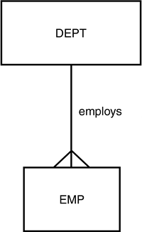

|
|
< Day Day Up > |
|
Assuring Data Integrity in DB2DB2 provides mechanisms to automatically enforce and maintain the integrity of data as it is added to, and modified within DB2 tables. The simplest form of data integrity enforcement available to DB2 is with data typing. By choosing the appropriate data types DB2 will force columns to contain only the proper form of data (for example, character, numeric, date, and so on). Of course, DB2 offers more sophisticated forms of ensuring data integrity, too. Features such as referential integrity, check constraints, triggers, validation routines, and edit procedures all can be used to ensure the integrity of DB2 data. Automatically enforcing DB2 data integrity is usually a wise choice of action because it offloads such work from application programs. Additionally, DB2-enforced data integrity will be applied for both planned and ad hoc modifications. Referential IntegrityWhen translating a logical model to a physical DB2 database the relationships are implemented as referential constraints. To define a referential constraint you must create a primary key in the parent table and a foreign key in the dependent table. The referential constraint ties the primary key to the foreign key. The table with the primary key is called the parent table and the table with the foreign key is called the dependent table (or child table). Foreign keys can refer to both primary keys and unique keys that are not explicitly defined as primary keys. Referential integrity (RI), therefore, can be defined as a method of ensuring data integrity between tables related by primary and foreign keys. When RI is implemented between tables DB2 will guarantee that an acceptable value is always in each foreign key column based on the data values of the primary key columns. RI defines the integrity and useability of a relationship by establishing rules that govern that relationship. The combination of the relationship and the rules attached to that relationship is referred to as a referential constraint. The rules that accompany the RI definition are just as important as the relationship to ensure correct and useful DB2 databases. The RI rules defined for each referential constraint are specified to determine how DB2 will handle dependent rows when a primary key row is deleted or updated. For example, when a primary key is deleted that refers to existing foreign key values, the rule specifies whether DB2 should void the primary key deletion, delete the foreign key values too, or set the foreign key values to null. The concept of RI can be summarized by the following "quick and dirty" definition: RI is a guarantee that an acceptable value is always in each foreign key column. Acceptable is defined in terms of an appropriate value as recorded in the corresponding primary key, or a null. Two other important RI terms are parent and child tables. For any given referential constraint, the parent table is the table that contains the primary key and the child table is the table that contains the foreign key. Refer to Figure 5.7. The parent table in the employs relationship is the DEPT table. The child table is the EMP table. So the primary key (say DEPTNO) resides in the DEPT table and a corresponding foreign key of the same data type and length, but not necessarily the with same column name (say WORKDEPT), exists in the EMP table. Figure 5.7. A relationship between two tables. As a general rule of thumb it is a good physical design practice to implement referential integrity using database constraints instead of trying to program integrity into application programs. Using database RI will ensure that integrity is maintained whether data is changed in a planned manner through an application program or in an ad hoc manner through SQL statements or query tools. Of course, there are exceptions to every rule. Defining DB2 Referential ConstraintsReferential constraints are defined using the FOREIGN KEY clause. A referential constraint consists of three components: a constraint name, the columns comprising the foreign key and a references clause. The same constraint name cannot be specified more than once for the same table. If a constraint name is not explicitly coded, DB2 will automatically create a unique name for the constraint derived from the name of the first column in the foreign key. For example, consider the relationship between the DSN8810.DEPT and DSN8810.EMP tables. The data model diagram in Figure A.1 of Appendix A graphically depicts this relationship:
CREATE TABLE DSN8810.EMP
(EMPNO CHAR(6) NOT NULL,
FIRSTNME VARCHAR(12) NOT NULL,
MIDINIT CHAR(1) NOT NULL,
LASTNAME VARCHAR(15) NOT NULL,
WORKDEPT CHAR(3),
PHONENO CHAR(4) CONSTRAINT NUMBER CHECK
(PHONENO >= '0000' AND
PHONENO <= '9999'),
HIREDATE DATE,
JOB CHAR(8),
EDLEVEL SMALLINT,
SEX CHAR(1),
BIRTHDATE DATE,
SALARY DECIMAL(9,2),
BONUS DECIMAL(9,2),
COMM DECIMAL(9,2),
PRIMARY KEY (EMPNO)
FOREIGN KEY RED (WORKDEPT)
REFERENCES DSN8810.DEPT ON DELETE SET NULL
)
EDITPROC DSN8EAE1
IN DSN8D81A.DSN8S81E;
CREATE TABLE DSN8810.DEPT
(DEPTNO CHAR(3) NOT NULL,
DEPTNAME VARCHAR(36) NOT NULL,
MGRNO CHAR(6),
ADMRDEPT CHAR(3) NOT NULL,
LOCATION CHAR(16),
PRIMARY KEY (DEPTNO)
)
IN DSN8D81A.DSN8S81D;
ALTER TABLE DSN8810.DEPT
FOREIGN KEY RDD (ADMRDEPT)
REFERENCES DSN8810.DEPT ON DELETE CASCADE;
ALTER TABLE DSN8810.DEPT
FOREIGN KEY RDE (MGRNO)
REFERENCES DSN8810.EMP ON DELETE SET NULL;
The primary key of EMP is EMPNO; the primary key of DEPT is DEPTNO. Several foreign keys exist, but let's examine the foreign key that relates EMP to DEPT. The foreign key, named RDE, in the DEPT table relates the MGRNO column to a specific EMPNO in the EMP table. This referential constraint ensures that no MGRNO can exist in the DEPT table before the employee exists in the EMP table. The MGRNO must take on a value of EMPNO. Additionally, the foreign key value in DEPT cannot subsequently be updated to a value that is not a valid employee value in EMP, and the primary key of EMP cannot be deleted without the appropriate check for corresponding values in the DEPT foreign key column or columns. To ensure that this integrity remains intact, DB2 has a series of rules for inserting, deleting, and updating:
Each referential constraint must define the action that will be taken on foreign key rows when a primary key is deleted. There are four options that can be specified:
The processing needs of the application dictate which delete option should be specified in the table create statements. All of these options are valid depending on the business rules that apply to the data. If efficiency is your primary goal, the RESTRICT option usually uses fewer resources because data modification of dependent tables is not performed. If data modification is necessary, however, allowing DB2 to perform it is usually preferable to writing cascade or set null logic in a high-level language. Referential SetsA referential set is a group of tables that are connected together by referential constraints. It is a wise course of action to avoid very large referential sets. Try not to tie together all tables in a large system; otherwise, recovery, quiesce, and other utility processing will be difficult to develop and administer. You should follow some general rules when deciding how to limit the scope of DB2-defined referential integrity:
Referential Integrity GuidelinesThe general rule for implementing referential integrity is to use DB2's inherent features instead of coding RI with application code. DB2 usually has a more efficient means of implementing RI than the application. Also, why should a programmer code what already is available in the DBMS? Exceptions to this rule are the subject of the subsequent guidelines in this section. Consider Programmatic RI for EfficiencyDB2 does a referential integrity check for every row insertion. You can increase efficiency if your application does a single check of a row from the parent table and then makes multiple inserts to the child table. Of course, you should not allow any data modifications to be made outside the control of your programs if DB2 RI is not used. Sometimes the flow of an application can dictate whether RI is more or less efficient than programmatic RI. If the application processing needs are such that the parent table is always (or usually) read before even one child is inserted, consider implementing programmatic RI instead of DB2 RI. DB2 RI would repeat the read process that the application must do anyway to satisfy its processing needs. Of course, DB2 RI might still be preferable in both of these situations because it enforces data integrity for both planned and ad hoc updates, something that programmatic RI cannot do. Consider Avoiding RI for Intact, Stable DataWhen tables are built from an existing source system and are populated using existing data, and that source system is referentially intact, you might want to avoid using DB2 RI on those tables. This is especially so if data is propagated from the existing system and the new tables will not be modified in any other manner. However, if the new tables will be modified, DB2 RI is the best way to ensure the on-going consistency and integrity of the data. Avoid RI for Read-Only SystemsDo not use DB2 RI if tables are read-only. Tables containing static data that is loaded and then never (or even rarely) modified are not good candidates for RI. The data should be analyzed and scrubbed prior to loading so that it is referentially intact. Because of the stability of the data there is no need for on-going referential constraints to be applied to the data. For data that is updated, but rarely, using application programs to enforce integrity is usually preferable to DB2 RI. Sometimes, to scrub the data when loading, you may want to use DB2 RI. Specifying ENFORCE CONSTRAINTS for the LOAD utility can save a lot of application coding to enforce RI. If application code is used to load the tables, base your decision for implementing RI with DB2 DDL according to the other guidelines in this chapter. Avoid RI for Read-Only SystemsDefine a primary (or unique) key to prohibit duplicate table rows. This should be done to ensure entity integrity regardless of whether dependent tables are related to the table being defined. Entity integrity ensures that each row in a table represents a single, real-world entity. Beware of Self-Referencing ConstraintsA self-referencing constraint is one in which the parent table is also the dependent table. The sample table, DSN8810.PROJ, contains a self-referencing constraint specifying that the MAJPROJ column must be a valid PROJNO. Self-referencing constraints must be defined using the DELETE CASCADE rule. Exercise caution when deleting rows from these types of tables because a single delete could cause all of the table data to be completely wiped out! Beware of RI Implementation RestrictionsTake the following restrictions into consideration when implementing RI on your DB2 tables:
Consider DELETE NO ACTION for Self-Referencing ConstraintsWhen deleting multiple rows from a table with a self-referencing constraint, a DELETE rule of RESTRICT will prohibit the DELETE. If you use a DELETE rule of NO ACTION instead, DB2 can allow the DELETE to complete. To specify ON DELETE NO ACTION in a referential constraint, the CURRENT RULES special register must be set to 'STD', not 'DB2'. Check ConstraintsCheck constraints can be used to place specific data value restrictions on the contents of a column through the specification of an expression. The expression is explicitly defined in the table DDL and is formulated in much the same way that SQL WHERE clauses are formulated. Any attempt to modify the column data (for example, during INSERT or UPDATE processing) will cause the expression to be evaluated. If the modification conforms to the Boolean expression, the modification is permitted to continue. If not, the statement will fail with a constraint violation. Check constraints consist of two components: a constraint name and a check condition. The same constraint name cannot be specified more than once for the same table. If a constraint name is not explicitly coded, DB2 will automatically create a unique name for the constraint derived from the name of the first column in the check condition. The check condition defines the actual constraint logic. The check condition can be defined using any of the basic predicates (>, <, =, <>, <=, >=), as well as BETWEEN, IN, LIKE, and NULL. Furthermore, AND and OR can be used to string conditions together. However, please note the following restrictions:
The EMP table contains the following check constraint:
PHONENO CHAR(4) CONSTRAINT NUMBER CHECK
(PHONENO >= '0000' AND
PHONENO <= '9999'),
This constraint defines the valid range of values for the PHONENO column. The following are examples of check constraints that could be added to the EMP table: CONSTRAINT CHECK_SALARY CHECK (SALARY < 50000.00) CONSTRAINT COMM_VS_SALARY CHECK (SALARY > COMM) CONSTRAINT COMM_BONUS CHECK (COMM > 0 OR BONUS > 0) The first check constraint ensures that no employee can earn a salary greater than $50,000; the second constraint ensures that an employee's salary will always be greater than his or her commission; and the third constraint ensures that each employee will have either a commission or a bonus set up. The primary benefit of check constraints is the ability to enforce business rules directly in each database without requiring additional application logic. Once defined, the business rule is physically implemented and cannot be bypassed. Check constraints also provide the following benefits:
NOTE The ALTER TABLE statement can be used to add CHECK constraints to existing tables. When adding a CHECK constraint to a table that is already populated with data, the data values are checked against the constraint depending on the value of the CURRENT RULES special register.
Check Constraint GuidelinesWhen using check constraints the following tips and techniques can be helpful to assure effective constraint implementation. Beware of Semantics with Check ConstraintsDB2 performs no semantic checking on constraints and defaults. It will allow the DBA to define defaults that contradict check constraints. Furthermore, DB2 will allow the DBA to define check constraints that contradict one another. Care must be taken to avoid creating this type of problem. The following are examples of contradictory constraints: CHECK (EMPNO > 10 AND EMPNO <9) In this case, no value is both greater than 10 and less than 9, so nothing could ever be inserted. However, DB2 will allow this constraint to be defined.
EMP_TYPE CHAR(8) DEFAULT 'NEW'
CHECK (EMP_TYPE IN ('TEMP', 'FULLTIME', 'CONTRACT'))
In this case, the default value is not one of the permitted EMP_TYPE values according to the defined constraint. No defaults would ever be inserted. CHECK (EMPNO > 10) CHECK (EMPNO >= 11) In this case, the constraints are redundant. No logical harm is done, but both constraints will be checked, thereby impacting the performance of applications that modify the table in which the constraints exist. Other potential semantic problems could occur:
Code Constraints at the Table-LevelAlthough single constraints (primary keys, unique keys, foreign keys, and check constraints) can be specified at the column-level, avoid doing so. In terms of functionality, there is no difference between an integrity constraint defined at the table-level and the same constraint defined at the column-level. All constraints can be coded at the table-level; only single column constraints can be coded at the column-level. By coding all constraints at the table-level maintenance will be easier and clarity will be improved. Code this (table-level):
CREATE TABLE ORDER_ITEM
(ORDERNO CHAR(3) NOT NULL,
ITEMNO CHAR(3) NOT NULL,
AMOUNT_ORD DECIMAL(7,2) NOT NULL,
PRIMARY KEY (ORDERNO, ITEMNO)
FOREIGN KEY ORD_ITM (ORDERNO)
REFERENCES ORDER ON DELETE CASCADE
)
Instead of this (column-level):
CREATE TABLE ORDER_ITEM
(ORDERNO CHAR(3) NOT NULL
REFERENCES ORDER ON DELETE CASCADE,
ITEMNO CHAR(3) NOT NULL,
AMOUNT_ORD DECIMAL(7,2) NOT NULL,
PRIMARY KEY (ORDERNO, ITEMNO)
)
Favor Check Constraints Over TriggersIf the same data integrity results can be achieved using a check constraint or a trigger, favor using the check constraint. Check constraints are easier to maintain and are more efficient than triggers. Using DB2 Triggers for Data IntegrityDB2 triggers can be useful for enforcing complex integrity rules, maintaining redundant data across multiple tables, and ensuring proper data derivation. There are many considerations that must be addressed to properly implement triggers. For complete coverage of how and why to use DB2 triggers, consult Chapter 8, "Using DB2 Triggers for Integrity." Using Field Procedures for Data IntegrityField procedures are programs that transform data on insertion and convert the data to its original format on subsequent retrieval. You can use a FIELDPROC to transform character columns, as long as the columns are 254 bytes or less in length. No FIELDPROCs are delivered with DB2, so they must be developed by the DB2 user. They are ideal for altering the sort sequence of values. Using Edit Procedures for Data IntegrityAn EDITPROC is functionally equivalent to a FIELDPROC, but it acts on an entire row instead of a column. Edit procedures are simply programs that transform data on insertion and convert the data to its original format on subsequent retrieval. Edit procedures are not supplied with DB2, so they must be developed by the user of DB2. They are ideal for implementing data compression routines. Using Validation Routines for Data IntegrityA VALIDPROC receives a row and returns a value indicating whether LOAD, INSERT, UPDATE, or DELETE processing should proceed. A validation procedure is similar to an edit procedure but it cannot perform data transformation; it simply assesses the validity of the data. A typical use for a VALIDPROC is to ensure valid domain values. For example, to enforce a Boolean domain, you could write a validation procedure to ensure that a certain portion of a row contains only T or F. |
|
|
< Day Day Up > |
|